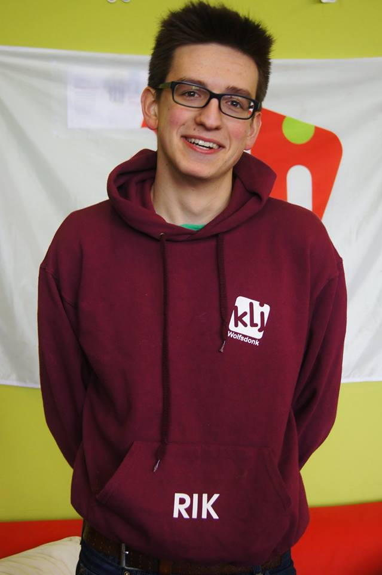
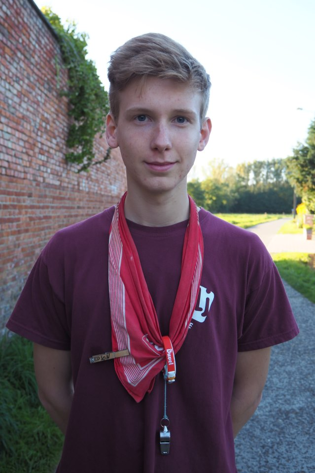

Leiding skunks

Rik
Rik van Dyck
Weybroekweg 12
3201 Langdorp
Geboortedatum: 27 oktober 1996
Studies: Bachelor in de industriële ingenieurswetenschappen, KULeuven
Functies in de KLJ:
Vuilnis
Gewestraad
Dorpsraad
 Tijs
Tijs
Tijs Van Woensel
Geboortedatum: 15 juli 1999
Studies: IT & netwerken
Functies in de KLJ:
Site verantwoordelijke
Drank verantwoordelijke
Jeugdraad
Seppe
Seppe Degelin
Leemstraat 53
3272 Testelt
Geboortedatum: 17 december 2000
Studies: Humane wetenschappen
Functies in de KLJ:
Hygiëne